Tendo
Tendo · Yamagata
Tendo
Highlighted on the Yamagata map.
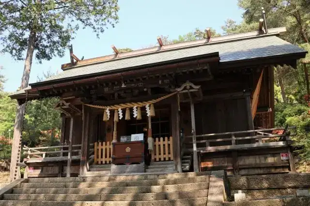
Stay
ホテルルートイン天童
Hoteruruutoin Tendou
Hotel in Tendo, Yamagata.
ホテル パールシティ天童（HMIホテルグループ）
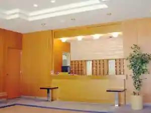
Hoteru Paarushitei Tendou ( Hmi Hoteruguruupu )
Hotel in Tendo, Yamagata.
ビジネスホテルいずくら
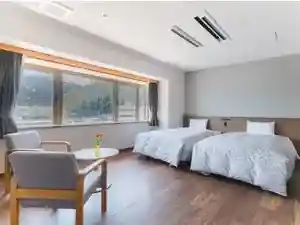
Bijinesuhoteru Izukura
Hotel in Tendo, Yamagata.
美味求真の宿 天童ホテル
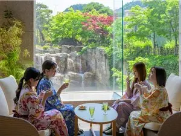
Bimi Kyuushin No Yado Tendou Hoteru
Hotel in Tendo, Yamagata.
ホテルビューくろだ
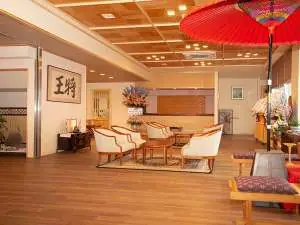
Hoterubyuu Kuroda
Hotel in Tendo, Yamagata.
ホテル アンダの森 山形天童店
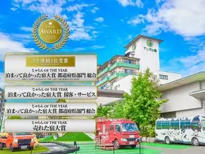
Hoteru Anda No Mori Yamagata Tendou Mise
Hotel in Tendo, Yamagata.
天童温泉 湯の香松の湯
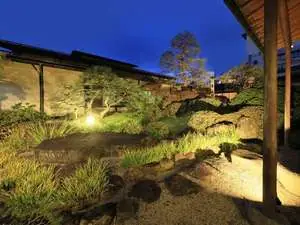
Tendou Onsen Yu No Kaori Matsu No Yu
Onsen lodging in Tendo, Yamagata.
天童セントラルホテル
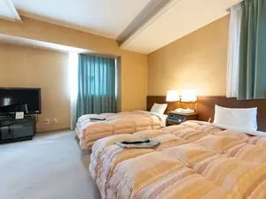
Tendou Sentoraruhoteru
Hotel in Tendo, Yamagata.
Dining
腰掛庵
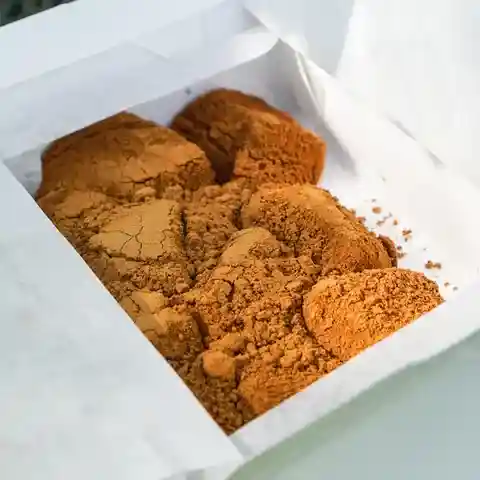
Koshikake Iori
Japanese sweets shop in Tendo, Yamagata.
やま竹
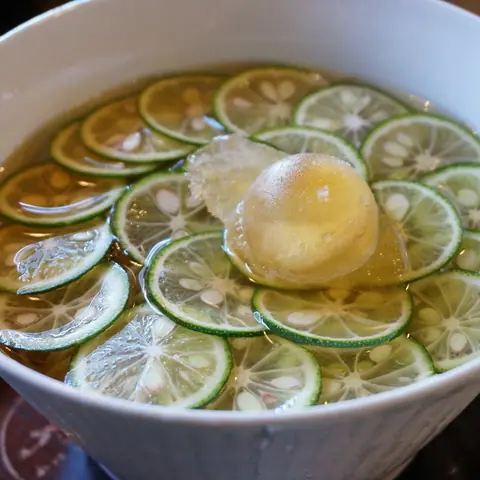
Yama Take
Soba restaurant in Tendo, Yamagata.
飯 吉里吉里
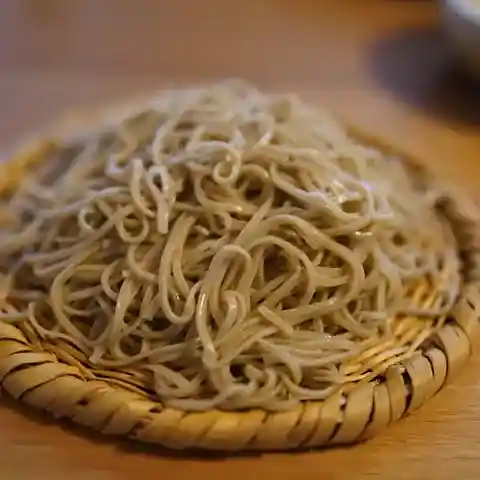
Meshi Kirikiri
Shokudo diner in Tendo, Yamagata.
中華蕎麦 春馬
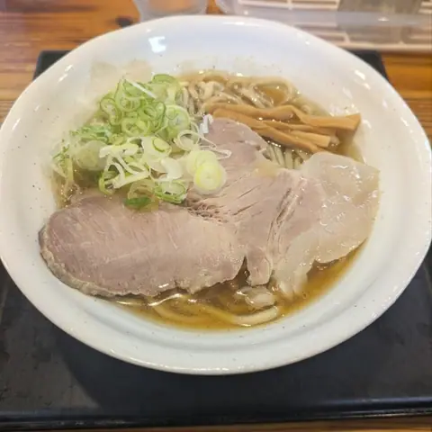
Chuuka Soba Haruma
Ramen shop in Tendo, Yamagata.
居酒屋 宝
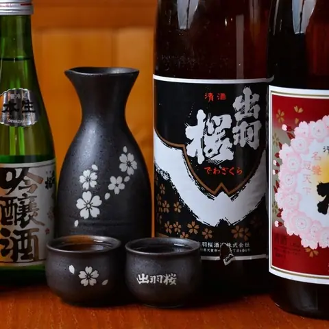
Izakaya Takara
Izakaya in Tendo, Yamagata.
テント ラ・フランスファクトリー
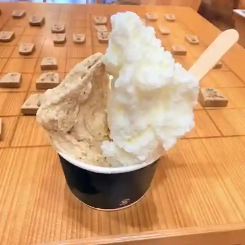
Tento Ra Furansufakutorii
Gelato and ice-cream shop in Tendo, Yamagata.
水車生そば
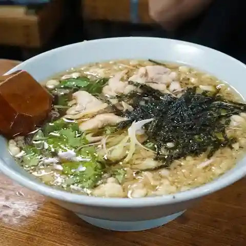
Suisha Naso Ba
Soba restaurant in Tendo, Yamagata.
そば処 一庵
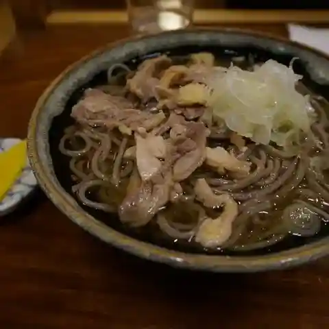
Soba Tokoro Ichi Iori
Soba restaurant in Tendo, Yamagata.
オウ ショウ カフェ
Ou Shou Kafe
Café in Tendo, Yamagata.
そば処多喜
Soba Tokoro Taki
Soba restaurant in Tendo, Yamagata.
梵天丸
Bonten Maru
Ramen shop in Tendo, Yamagata.
いばらき
Ibaraki
Ramen shop in Tendo, Yamagata.
一本杉菓子店
Ipponsugi Kashi Mise
Japanese sweets shop in Tendo, Yamagata.
だんごと煎餅の店 みよまつ
Dangoto Senbei No Mise Miyomatsu
Japanese sweets café in Tendo, Yamagata.
茂利多屋
Shigetoshi Taya
Ramen shop in Tendo, Yamagata.
三州屋
Sanshuu Ya
Tonkatsu restaurant in Tendo, Yamagata.
春日食堂
Kasuga Shokudou
Shokudo diner in Tendo, Yamagata.
サン・ピュア
San Pyua
Gelato and ice-cream shop in Tendo, Yamagata.
山形旬菓詩 武田
Yamagata Jun Ka Shi Takeda
Cake shop in Tendo, Yamagata.
湯坊いちらく TENDO SPA & BREWERY
Yu Bou Ichiraku Tendo Spa & Brewery
Ryokan restaurant in Tendo, Yamagata.
コザブ ジェラート
Kozabu Jieraato
Gelato and ice-cream shop in Tendo, Yamagata.
中国料理 林商
Chuugokuryouri Hayashi Shou
Chinese restaurant in Tendo, Yamagata.
一保堂
Kazuyasu Dou
Tonkatsu restaurant in Tendo, Yamagata.
Sights
Tendo Onsen
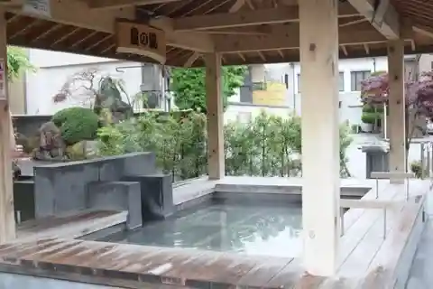
Shogi pieces appear here and there !? A hot spring town with excellent access !!
Tendo Park (Mt. Maizuru)
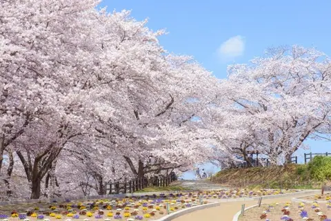
Tendo Cherry Blossom Festival: Human Shogi
Wakamatsu-ji Temple
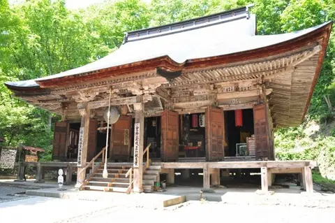
Temple No. 1 of the Mogami 33 Kannon pilgrimage (Tendai sect). Legend says the Nara-period priest Gyoki heard a bell on the mountain, climbed it and saw a shining image of Kannon, and founded the temple there.
Nakano Fruits (Nakano Tourist Orchard)
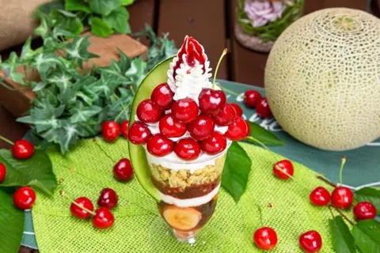
A popular Tendo orchard offering seasonal fruit picking, with an orchard-run café serving sweets made with fresh fruit; its fruit parfaits and shakes are especially popular.
Osho Orchard
A fruit-picking orchard with a café, and the only place in Tendo offering greenhouse cherry picking. About 10 hectares of orchards, plus a fruit vending stand open 24 hours a day, all year.